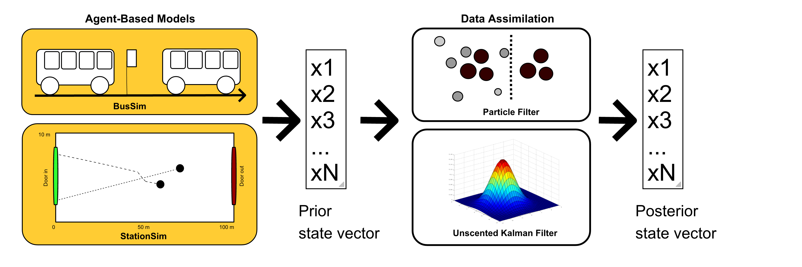

Data-driven cities: bringing together AI and city simulation
Minh Kieu
Lecturer
University of Auckland
These slides:
https://bit.ly/2021-MK
The challenges of ubiquituous data in transportation
How to fully harness data?
How to anticipate the future of transport?
Publications
Big data in transportation

Data project 1: Synthetic Big Data of Human Activities (SynAc)
Funded by FRDF Funding, University of Auckland

Data project 1: Synthetic Big Data of Human Activities (SynAc)
Major challenges with sequential and spatial data

Data project 2: Urban Transport Modelling for Sustainable Well-being in Hanoi
Funded by British Academy (UK)
There are around 10 million motorbikes in Hanoi, Vietnam
A potential motorbike ban in the CBD of Hanoi
How do people react to that?
Big Data in transportation: Summary
Challenges
Skewness
Prolific users distort patterns
Spatial accuracy
Missing data
Bias
E.g. Choose a number between 1, 2, 3 and 4
Complicated!!
Messy, and "too big for Excel"
Benefits
Volume
Potential for large scale analysis
Velocity
Streaming / regularly updated
Potential for dynamic models
Need to consolidate data from multiple sources
Require models that can represent complex systems

Why is it difficult to model urban transport?
Extremely complex system:
Attributes of the environment (e.g. individual houses, pubs, transport hubs, parks, etc.).
Personal characteristics (heterogeneity).
Features of the local community.
Physical layout of the neighbourhood (e.g. street networks).
Why is it difficult to model urban transport?
Traditional approaches often work at large scales, struggle to predict local effects
Computationally convenient
Cities are built from the bottom up
Simulation project: DUST (Horizon 2020 project)
New PhD student: Started December 2021
Data-driven Agent-based models: Dealing with Divergence
The reality is dynamic: Complex models may explain cities, but diverge over time.
The reality is stochastic: No set of parameters would perfectly explain the real system.
Data Assimilation for Agent-Based Models
Project info:
https://dust.leeds.ac.uk/
Postgraduate course: Civil 763 - Smart Infrastructure Analytics
Data analytics course for Infrastructure Engineers
Use real data
Solve real problems
Use existing experience in Engineering